19direct studio/1BR comps
~¥22,000studio gross/night (median)
~¥16,500studio net ADR est.
180 nt/yrminpaku legal cap (residential zone)
ADirect comp to Canon Palace studios/1K (24–44 m²)
BComp for unit 901 (77 m² 2LDK)
CLarger / market context
| Photo | Listing | Size | Type / beds | 5-night total | ~ /night (gross) | net ADR est. | Rating |
|---|---|---|---|---|---|---|---|
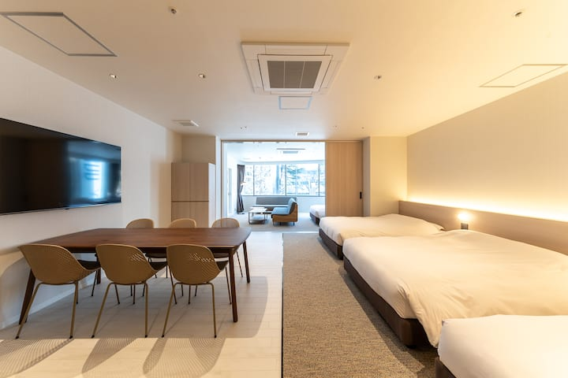 |
Exclusive floor on the 2nd floor of the hotel
Direct studio/1BR comp
|
— | 1BR 1 bed |
¥275,500 5 nights |
¥55,100 | ¥41,325 | 5.0 ⭐ 3 rev |
 |
Tokyo｜Shibuya, 9 min｜33㎡｜5 people｜Wi-Fi｜EV｜Omotesando, 13 min
Direct studio/1BR comp
|
33 m² | 1BR 1 bed |
¥219,928 5 nights |
¥43,986 | ¥32,990 | 5.0 ⭐ 3 rev |
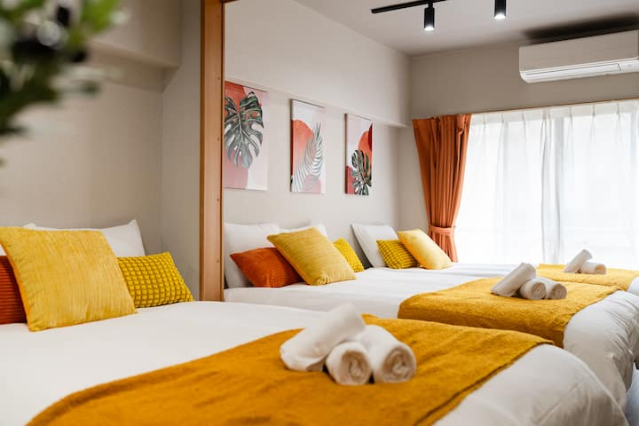 |
[9 minutes to Shibuya] 5 people OK / 33㎡ / A comfortable space with full ameniti
Direct studio/1BR comp · 9 min to Shibuya
|
33 m² | 1BR 1 bed |
¥214,884 5 nights |
¥42,977 | ¥32,233 | 5.0 ⭐ 39 rev |
 |
Vibe Shibuya (huge 33㎡, 7 mins to stn)
Direct studio/1BR comp · 7 min to Shibuya
|
33 m² | 1BR 1 bed |
¥206,000 5 nights |
¥41,200 | ¥30,900 | 5.0 ⭐ 19 rev |
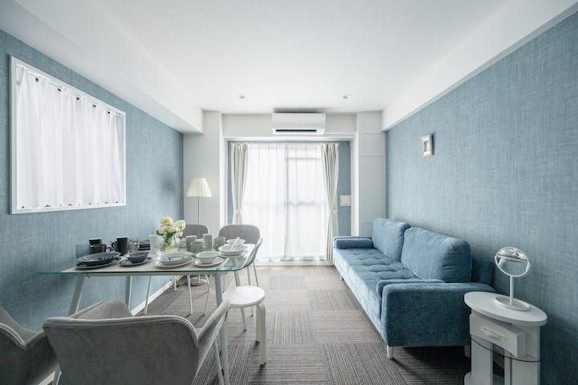 |
Stylish 1LDK｜Walk to Shibuya/Harajuku｜Renovated
Direct studio/1BR comp
|
— | 1BR 1 bed |
¥197,265 5 nights |
¥39,453 | ¥29,590 | New |
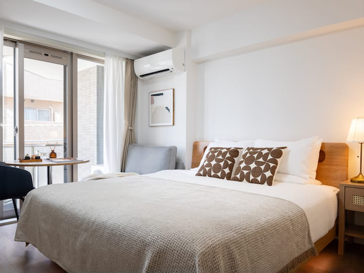 |
Ebisu Breeze Apartment 203 near JR and Hibiya Line
Direct studio/1BR comp
|
— | 1BR 1 bed |
¥189,000 5 nights |
¥37,800 | ¥28,350 | 5.0 ⭐ 16 rev |
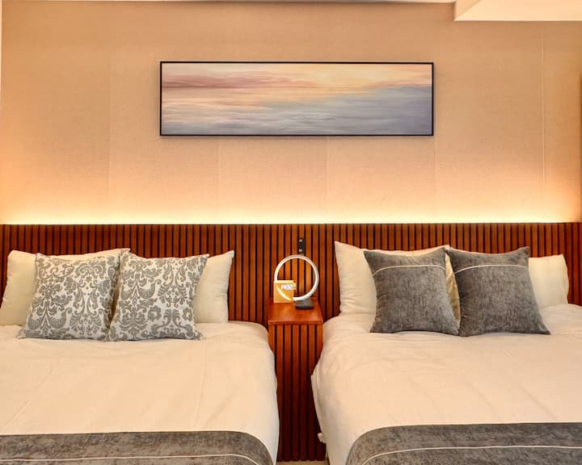 |
Quiet Luxury in Azabu｜Walk to Roppongi ｜ Balcony
Direct studio/1BR comp
|
— | 1BR 1 bed |
¥170,108 5 nights |
¥34,022 | ¥25,516 | 5.0 ⭐ 38 rev |
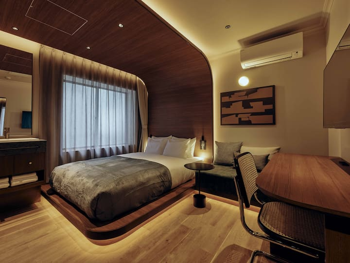 |
Heart of Shibuya! ｜illi Hotels Lume Shibuya
Direct studio/1BR comp
|
— | 1BR 1 bed |
¥156,640 5 nights |
¥31,328 | ¥23,496 | New |
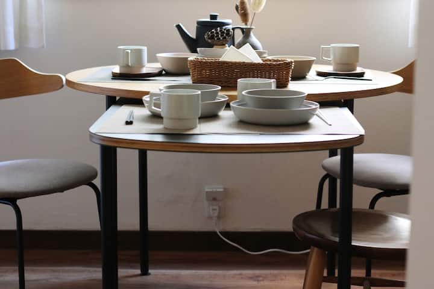 |
5 min walk from Shibuya Station/4 BED (w120cm) 10 min to Hachiko/Perfect for Tok
Direct studio/1BR comp · 5 min to Shibuya
|
10 m² | 1BR 1 bed |
¥152,016 5 nights |
¥30,403 | ¥22,802 | 4.91 ⭐ 178 rev |
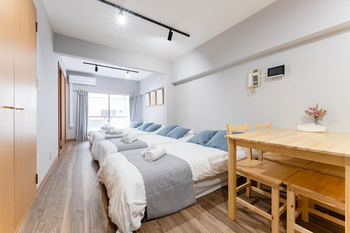 |
10-minute walk from Shibuya Station / 33 ㎡ for up to 6 people / Quiet, spacious
Direct studio/1BR comp
|
33 m² | 1BR 1 bed |
¥146,500 5 nights |
¥29,300 | ¥21,975 | 4.93 ⭐ 14 rev |
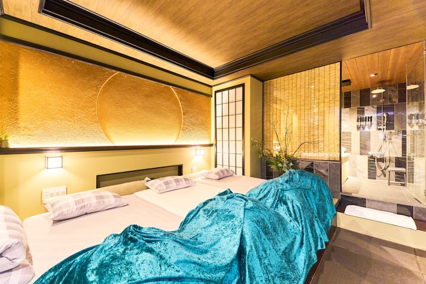 |
[HOTEL HISUI (2F)] A 5-minute walk from Daikan-yama Station
Direct studio/1BR comp
|
— | 1BR 1 bed |
¥143,674 5 nights |
¥28,735 | ¥21,551 | New |
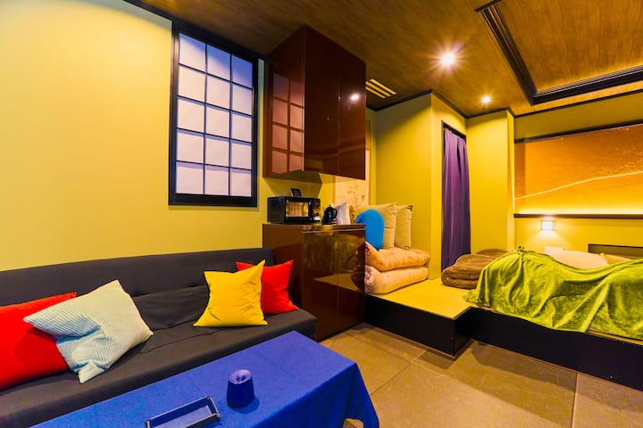 |
[HOTEL HISUI (3F)] A 5-minute walk from Daikan-yama Station
Direct studio/1BR comp
|
— | 1BR 1 bed |
¥140,536 5 nights |
¥28,107 | ¥21,080 | 5.0 ⭐ 14 rev |
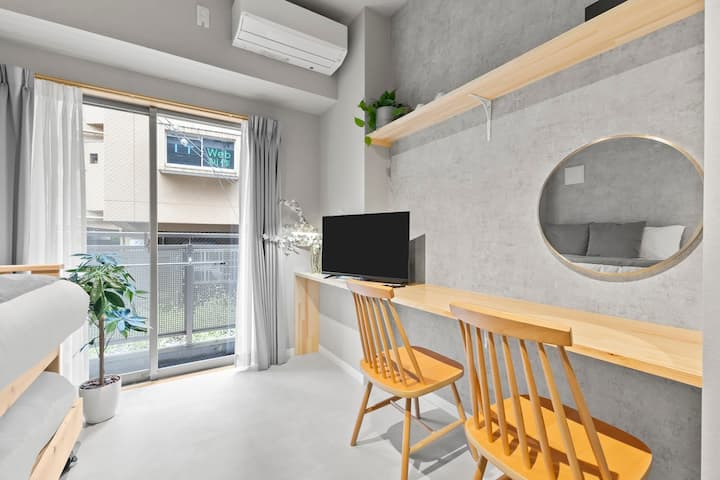 |
5-minute walk to Shibuya station
Direct studio/1BR comp
|
— | 1BR 1 bed |
¥119,825 5 nights |
¥23,965 | ¥17,974 | 4.93 ⭐ 30 rev |
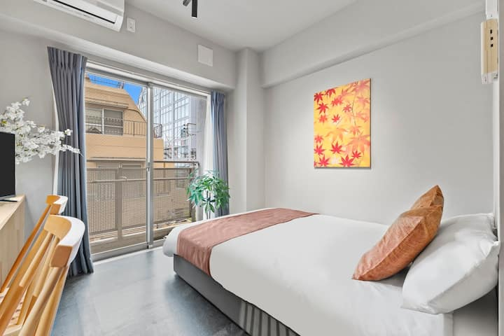 |
5-minute walk to Shibuya station
Direct studio/1BR comp
|
— | 1BR 1 bed |
¥106,506 5 nights |
¥21,301 | ¥15,976 | 4.85 ⭐ 27 rev |
 |
Ebisu 2101 302
Direct studio/1BR comp
|
— | 1BR 1 bed |
¥102,706 5 nights |
¥20,541 | ¥15,406 | 4.99 ⭐ 86 rev |
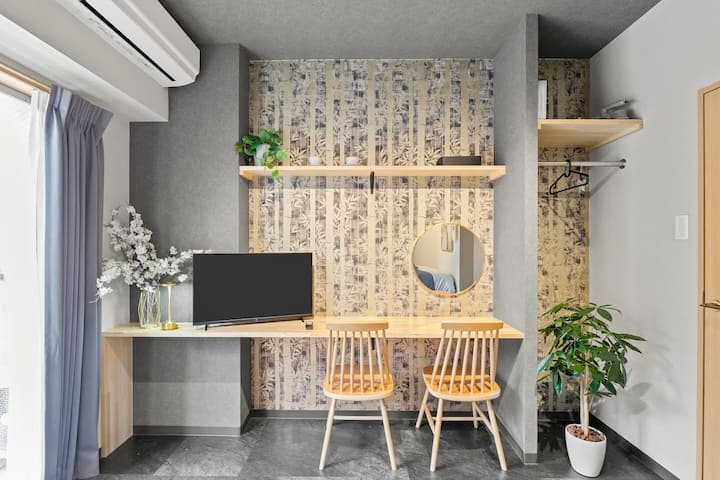 |
5 minutes walk from Shibuya Station
Direct studio/1BR comp · 5 min to Shibuya
|
— | 1BR 1 bed |
¥95,285 5 nights |
¥19,057 | ¥14,293 | 4.89 ⭐ 36 rev |
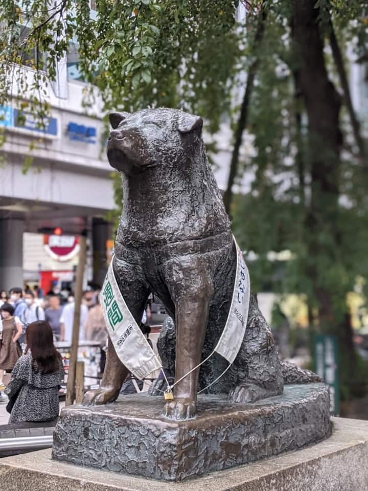 |
shibuya02
Direct studio/1BR comp
|
— | 1BR 1 bed |
¥76,573 5 nights |
¥15,315 | ¥11,486 | New |
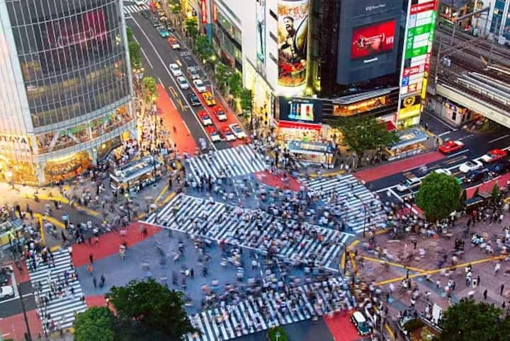 |
shibuya01
Direct studio/1BR comp
|
— | 1BR 1 bed |
¥72,716 5 nights |
¥14,543 | ¥10,907 | New |
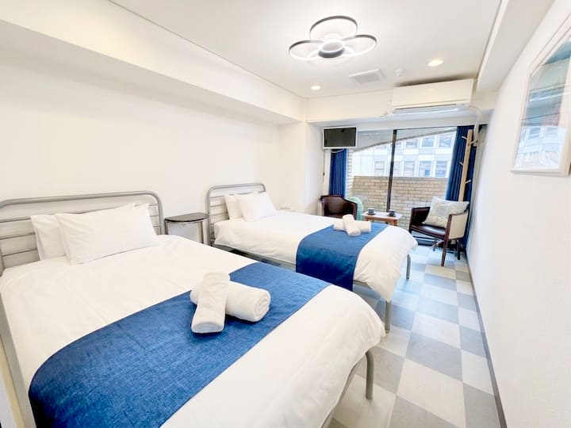 |
3 min from Shibuya/ Best for biz & trip/ Laundry
Direct studio/1BR comp · 3 min to Shibuya
|
— | 1BR 1 bed |
¥70,600 5 nights |
¥14,120 | ¥10,590 | New |
 |
shibuyaryokan suirow penthouse stonebath sweetroom
Comp for 901 (77 m² 2LDK)
|
— | 2BR 2 bed |
¥877,565 5 nights |
¥175,513 | ¥131,635 | 5.0 ⭐ 33 rev |
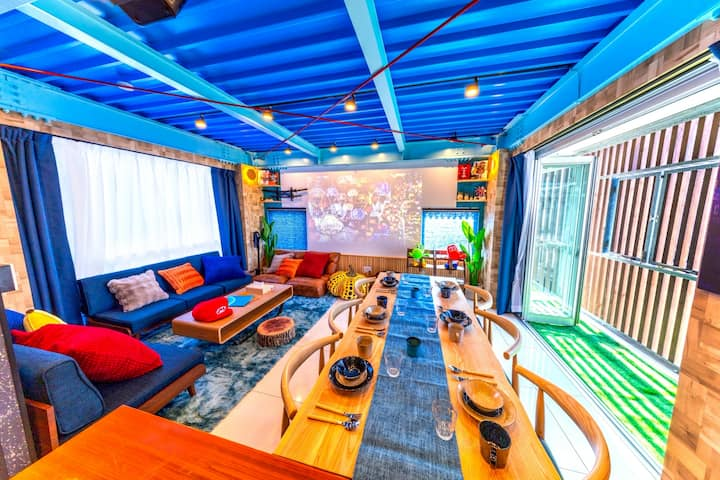 |
3 min walk from Sangenjaya Sta
Comp for 901 (77 m² 2LDK) · 3 min to Shibuya
|
90 m² | 2BR 2 bed |
¥277,500 5 nights |
¥55,500 | ¥41,625 | 5.0 ⭐ 25 rev |
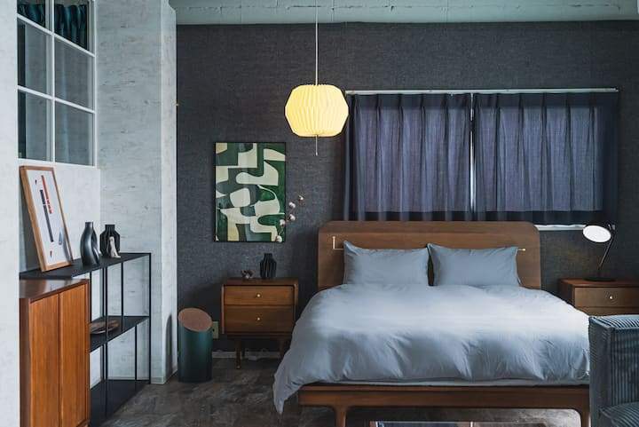 |
7-min walk to Shibuya sta・51㎡・3 Bed・Up to 5 Guests
Comp for 901 (77 m² 2LDK)
|
51 m² | 2BR 2 bed |
¥275,525 5 nights |
¥55,105 | ¥41,329 | 5.0 ⭐ 29 rev |
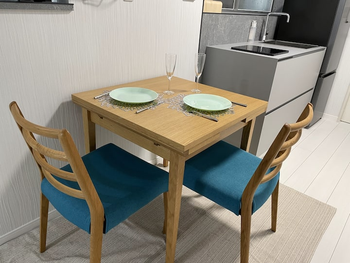 |
Near Shibuya Renovated 3BR House 60㎡ Max 5 Guests
Comp for 901 (77 m² 2LDK)
|
60 m² | 3BR 3 bed |
¥155,500 5 nights |
¥31,100 | ¥23,325 | 5.0 ⭐ 32 rev |
 |
9 min to Shibuya station/8 person/2 rooms/4 SD Bed
Comp for 901 (77 m² 2LDK) · 9 min to Shibuya
|
— | 2BR 2 bed |
¥142,624 5 nights |
¥28,525 | ¥21,394 | 4.88 ⭐ 68 rev |
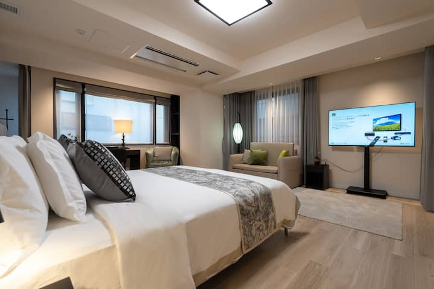 |
F&F OMOTESANDO
Larger / context only
|
— | 6BR 6 bed |
¥1,222,500 5 nights |
¥244,500 | ¥183,375 | 5.0 ⭐ 6 rev |
 |
Reopen! villa(232㎡)4minShinjuku/10minShibuya
Larger / context only
|
232 m² | 4BR 4 bed |
¥965,424 5 nights |
¥193,085 | ¥144,814 | 5.0 ⭐ 7 rev |
 |
[Shibuya Ward] 8-minute walk from Shibuya Station. Enjoy your comfortable stay i
Larger / context only
|
— | 4BR 4 bed |
¥506,463 5 nights |
¥101,293 | ¥75,970 | 4.98 ⭐ 46 rev |
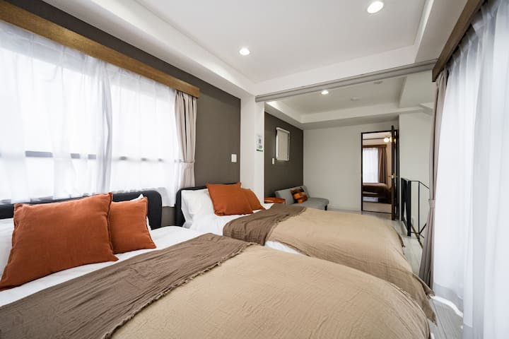 |
[Within walking distance of Shibuya Station!] Spacious 6-bed/duplex-style accomm
Larger / context only
|
— | 3BR 3 bed |
¥390,000 5 nights |
¥78,000 | ¥58,500 | 5.0 ⭐ 3 rev |
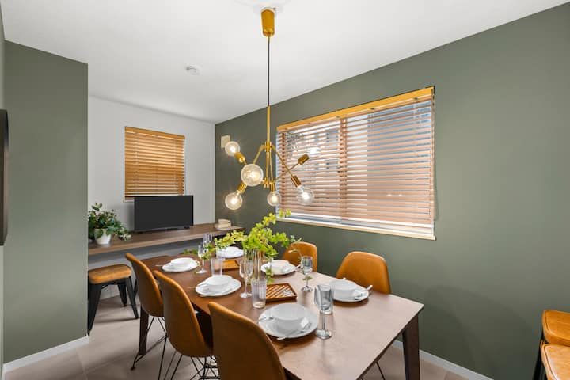 |
Shibuya area/5-minute walk to the nearest station/15-minute walk to Shibuya stat
Larger / context only
|
— | 4BR 4 bed |
¥285,294 5 nights |
¥57,059 | ¥42,794 | 4.83 ⭐ 24 rev |
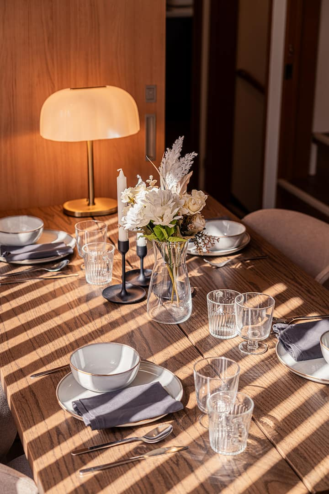 |
E1・Tokyo Ebisu 8 min Detached house, max 8 people.
Larger / context only
|
— | 3BR 3 bed |
¥176,882 5 nights |
¥35,376 | ¥26,532 | New |
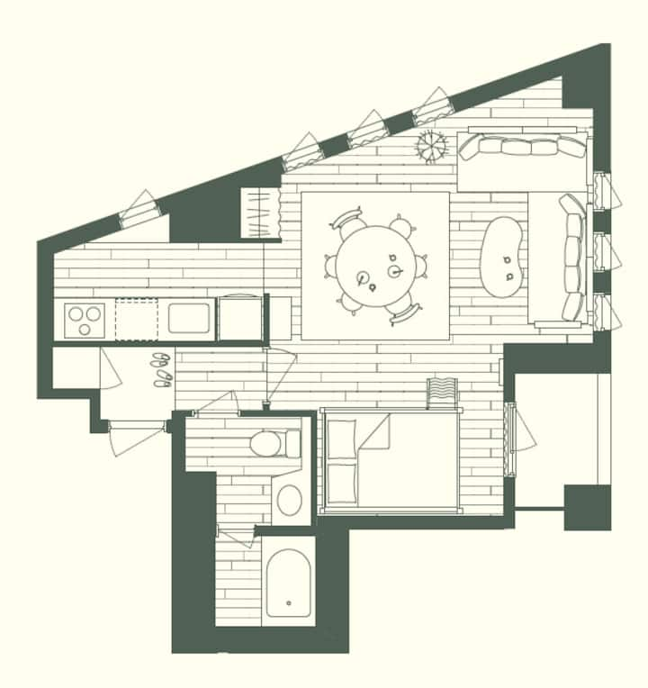 |
#204 / 44 m² / 8-minute walk from Shibuya Station / Excellent location for sight
Larger / context only
|
44 m² | — 4 beds |
¥169,700 5 nights |
¥33,940 | ¥25,455 | New |
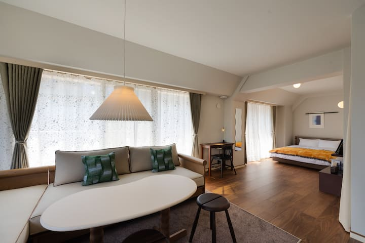 |
#602 / 44 m² / 8-minute walk from Shibuya Station / Excellent location for sight
Larger / context only
|
44 m² | — 3 beds |
¥167,600 5 nights |
¥33,520 | ¥25,140 | New |
 |
# 701/35 ㎡/3 min walk from Shibuya Station! Comfortable stay in the center of To
Larger / context only · 3 min to Shibuya
|
35 m² | — 2 beds |
¥142,375 5 nights |
¥28,475 | ¥21,356 | 4.92 ⭐ 24 rev |
 |
# 802/31 ㎡/3 min walk from Shibuya Station! Comfortable stay in the center of To
Larger / context only · 3 min to Shibuya
|
31 m² | — |
¥129,075 5 nights |
¥25,815 | ¥19,361 | 5.0 ⭐ 6 rev |
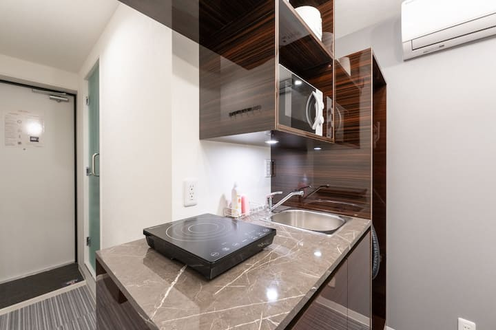 |
4 minutes on foot from Ebisu station/within walking distance of Shibuya station/
Larger / context only · 4 min to Shibuya
|
— | — 1 futon |
¥51,240 5 nights |
¥10,248 | ¥7,686 | 4.46 ⭐ 35 rev |
 |
Spablik Inn, a beautiful ryokan-style capsule hotel with a large spa (men only)
Larger / context only
|
— | — 1 bed |
¥41,152 5 nights |
¥8,230 | ¥6,172 | 4.92 ⭐ 96 rev |
How to read these numbers. Airbnb search totals are per 5-night stay including cleaning + ~14% service fee. ~/night (gross) = total ÷ 5. Net ADR est. ≈ gross × 0.75 (strips cleaning + host fee) — the figure to feed a revenue model.
⚠️ Legal cap. Canon Palace is zoned Residential. Legal STR there is minpaku (住宅宿泊事業法), hard-capped at 180 nights/year (≈49% max occupancy); a year-round 旅館業 hotel licence is generally not available in residential zones. The year-round comps below are likely hotel-licensed or in commercial zones. Model STR upside under the 180-night cap; confirm the exact 用途地域 and Minato/Shibuya minpaku ordinance before assuming more. Full analysis in
⚠️ Legal cap. Canon Palace is zoned Residential. Legal STR there is minpaku (住宅宿泊事業法), hard-capped at 180 nights/year (≈49% max occupancy); a year-round 旅館業 hotel licence is generally not available in residential zones. The year-round comps below are likely hotel-licensed or in commercial zones. Model STR upside under the 180-night cap; confirm the exact 用途地域 and Minato/Shibuya minpaku ordinance before assuming more. Full analysis in
airbnb_analysis.md; long-term rent base case in rent_roll.csv.